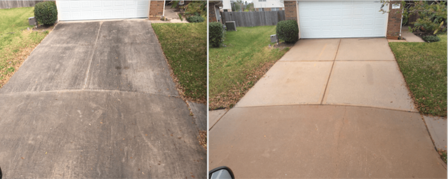
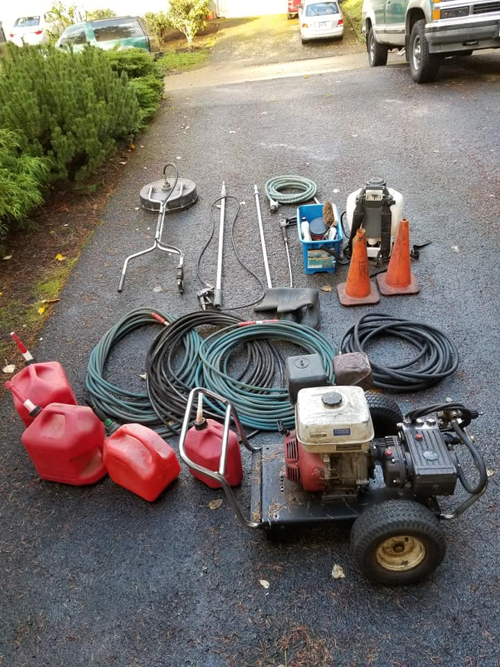
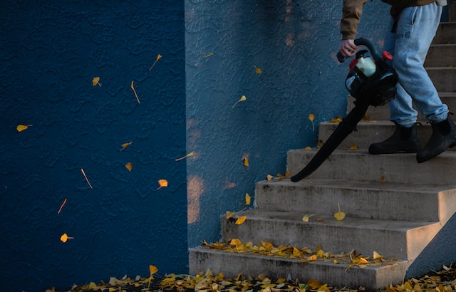
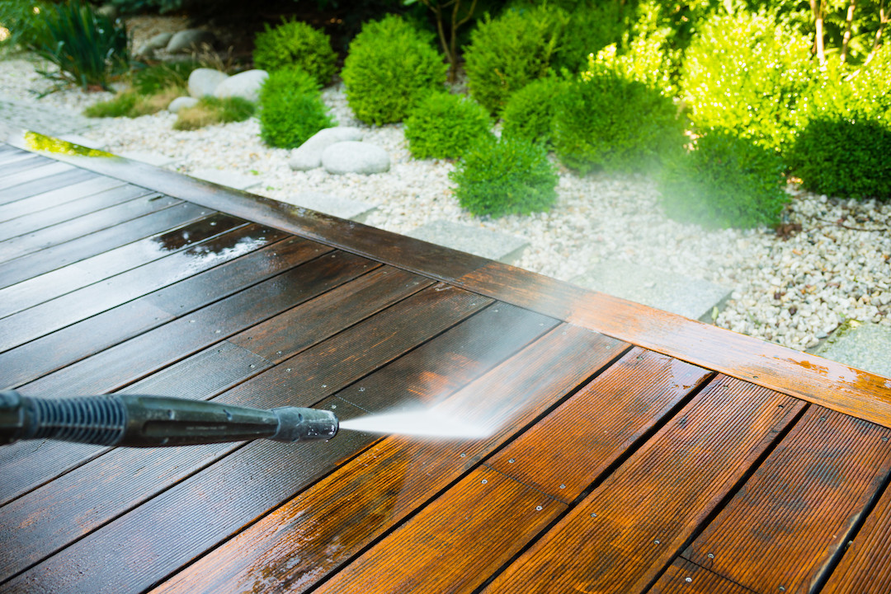
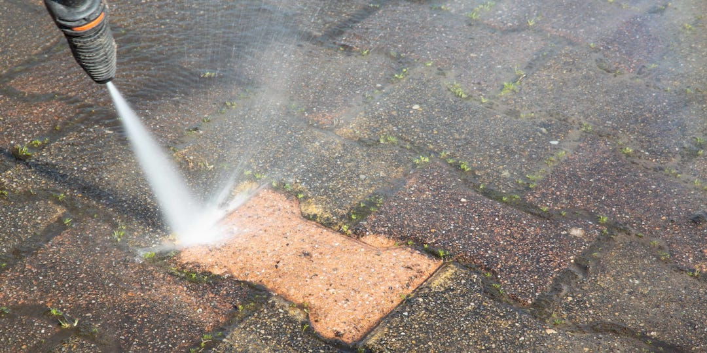
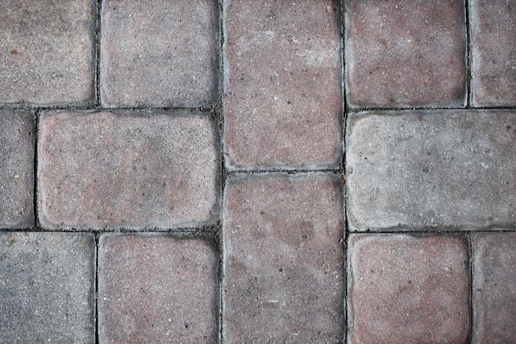

Posted on June 2, 2023
Pressure washing your home is a great way to give it a fresh and clean look without spending a
lot of money on renovations or repairs. However, if you're not familiar with the process, it can be
intimidating and even dangerous. That's why we've created the ultimate guide to pressure washing your home,
complete with tips and tricks from the pros.
Benefits of Pressure Washing Your Home
Before we dive into the specifics of pressure washing your home, it's essential to
understand why it's essential and what benefits it offers. Pressure washing can:
- Improve the curb appeal of your home: A clean and well-maintained home exterior can make a
significant
difference in your home's value and appeal. Pressure washing can remove dirt, grime, and stains, making your
home look new again.
- Prevent damage: Over time, dirt, algae, and other substances can cause damage to your home's
exterior,
leading to costly repairs. Pressure washing can remove these substances, preventing long-term damage and
prolonging your home's lifespan.
- Promote a healthy living environment: Mold, mildew, and other substances can be harmful to your
health,
especially if you have allergies or respiratory issues. Pressure washing can remove these substances, making
your home a healthier place to live.
Pressure Washing Equipment and Safety Gear
Before you start pressure washing your home, you'll need to have the right
equipment and safety gear. Here's what you'll need:

- Pressure washer: Choose a pressure washer with a PSI (pounds per square inch) of at least 2,000 and
a GPM
(gallons per minute) of at least 1.4 for most residential applications. Consider an electric pressure washer
if you're working on a smaller area or a gas-powered model if you're working on a larger area.
- Nozzles: Choose the appropriate nozzle for the job. A 25-degree nozzle is ideal for most
applications,
while a 15-degree nozzle is suitable for tougher jobs. A 40-degree nozzle is best for delicate surfaces.
- Cleaning solutions: Use a cleaning solution designed for pressure washers. Choose a solution based
on the
surface you're cleaning and the type of stain you're removing.
- Safety gear: Wear safety glasses, ear protection, and gloves to protect yourself from the
high-pressure
water and cleaning solutions.
It's important to read the manufacturer's instructions carefully before using the
pressure washer and to follow all safety guidelines to prevent injury.
Preparing Your Home for Pressure Washing
Before you start pressure washing your home, you'll need to prepare it properly.
Here's what you should do:

- Remove obstacles: Move any obstacles, such as outdoor furniture, toys, or plants, away from the
area you
plan to pressure wash.
- Protect plants: Cover any delicate plants or shrubs with plastic sheeting to prevent damage from
the
cleaning solutions or high-pressure water.
- Close windows and doors: Close all windows and doors to prevent water from entering your home.
- Test the pressure: Test the pressure washer on a small, inconspicuous area to ensure it won't cause
damage
to the surface.
Once you've prepared your home for pressure washing, you're ready to begin.
Techniques for Pressure Washing Your Home - From Top to Bottom
When pressure washing your home, it's important to start from the top and work your
way down to avoid streaking or damage. Here's how to pressure wash your home effectively:
- Start at the top: Begin at the highest point of your home, such as the roof or chimney, and work
your way
down.
- Use a sweeping motion: Use a sweeping motion with the pressure washer wand, moving back and forth
across
the surface, but not staying in one spot for too long.
- Work in sections: Work in small sections, rinsing each section thoroughly before moving on to the
next.
- Adjust the pressure: Adjust the pressure as needed for each surface. Use a lower pressure for
delicate
surfaces, such as siding, and a higher pressure for tougher jobs, such as concrete.
Be careful not to get too close to the surface you're cleaning, as this can cause
damage.
Cleaning Specific Areas of Your Home - Siding, Deck, Driveway, and Patio
Different surfaces require different techniques and cleaning solutions. Here's how
to clean specific areas of your home:
Siding
Siding can accumulate dirt, grime, and other stains that can be tough to remove.
Here's how to pressure wash your home's siding:
- Use a cleaning solution designed for pressure washers: Choose a cleaning solution designed for the type of
siding you have and the type of stain you're removing.
- Work from top to bottom: Start at the top of the siding and work your way down, using a sweeping motion
with the pressure washer wand.
- Rinse thoroughly: Rinse each section thoroughly before moving on to the next, using a lower pressure to
avoid damage.
Deck
A deck can accumulate mold, mildew, and other substances that can be harmful and
unsightly. Here's how to pressure wash your deck:

- Sweep the deck: Sweep the deck to remove any loose debris.
- Use a cleaning solution designed for pressure washers: Choose a cleaning solution designed for the type of
stain you're removing.
- Work in sections: Work in small sections, applying the cleaning solution and letting it sit for a few
minutes before pressure washing it off.
- Rinse thoroughly: Rinse each section thoroughly before moving on to the next.
Driveway
A driveway can accumulate oil stains, tire marks, and other substances that can be
tough to remove. Here's how to pressure wash your driveway:
- Use a cleaning solution designed for pressure washers: Choose a cleaning solution designed for the type of
stain you're removing.
- Apply the solution: Apply the cleaning solution to the stained area and let it sit for a few minutes.
- Use a surface cleaner attachment: Use a surface cleaner attachment for larger areas to ensure even
pressure and avoid streaking.
- Rinse thoroughly: Rinse each section thoroughly before moving on to the next.
Patio
A patio can accumulate dirt, grime, and other stains that can be tough to remove.
Here's how to pressure wash your patio:

- Sweep the patio: Sweep the patio to remove any loose debris.
- Use a cleaning solution designed for pressure washers: Choose a cleaning solution designed for the type of
stain you're removing.
- Work in sections: Work in small sections, applying the cleaning solution and letting it sit for a few
minutes before pressure washing it off.
- Rinse thoroughly: Rinse each section thoroughly before moving on to the next.
Tips for Removing Tough Stains and Grime
Sometimes, even pressure washing isn't enough to remove tough stains and grime.
Here are some tips for removing stubborn stains:

- Use a hot water pressure washer: A hot water pressure washer can be more effective at removing tough
stains than a cold water pressure washer.
- Use a cleaning solution designed for the stain: Choose a cleaning solution designed specifically for the
type of stain you're trying to remove.
- Use a scrub brush: For tough stains, use a scrub brush to agitate the cleaning solution and help loosen
the stain.
- Hire a professional: If all else fails, consider hiring a professional pressure washing service to
remove
tough stains and grime.
Common Mistakes to Avoid While Pressure Washing
Pressure washing can be dangerous and even damaging if not done correctly. Here are
some common mistakes to avoid:
- Using too much pressure: Using too much pressure can cause damage to the surface you're cleaning or even
cause injury.
- Using the wrong nozzle: Using the wrong nozzle can also cause damage to the surface you're cleaning or
even cause injury.
- Not testing the pressure: Not testing the pressure before starting can cause damage to the surface you're
cleaning or even cause injury.
- Not following safety guidelines: Not following safety guidelines can lead to injury or even death.
Conclusion - Why Hiring a Professional Pressure Washing Service is Worth It
While pressure washing your home can be a great DIY project, sometimes it's best to
leave it to the professionals. Professional pressure washing services have the experience, equipment, and
knowledge to get the job done safely and effectively. They can also offer additional services, such as soft
washing, that can be gentler on delicate surfaces. So if you're not confident in your pressure washing skills
or want to ensure the best results, consider hiring a professional pressure washing service.
Pressure washing your home can be a great way to improve its appearance and prolong
its lifespan. With the right equipment, techniques, and cleaning solutions, you can remove dirt, grime, and
other stains that have accumulated on your home's siding, deck, driveway, or patio. Just be sure to follow
safety guidelines, avoid common mistakes, and consider hiring a professional if you're not confident in your
skills. With these tips and tricks from the pros, you'll have a clean and beautiful home exterior in no time.